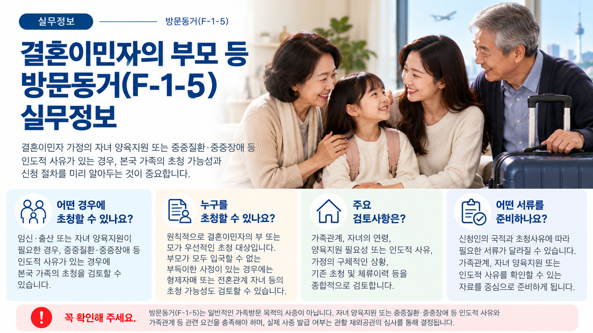
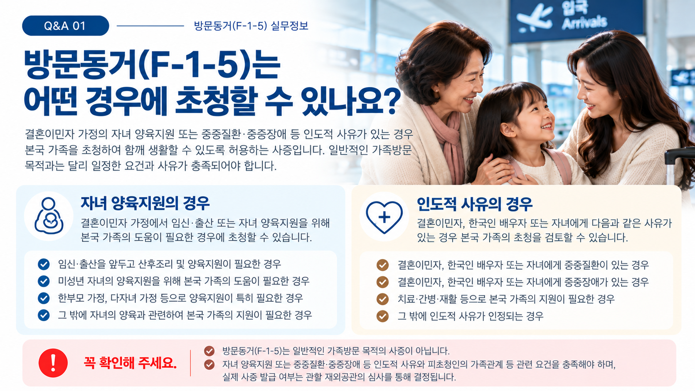
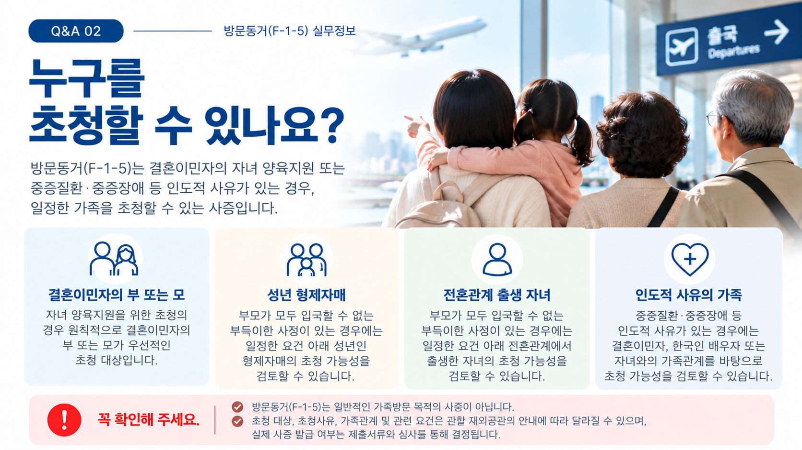
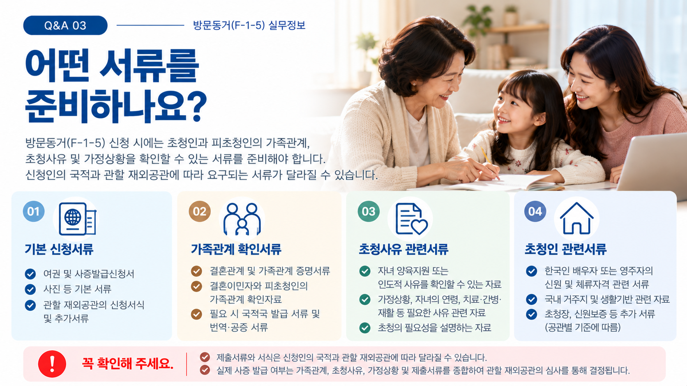

01. 방문동거(F-1-5)란?
결혼이민자 가정에서 자녀 양육지원이 필요하거나 중증질환·중증장애 등 인도적인 사유가 있는 경우 일정한 요건 아래 본국 가족의 초청을 검토할 수 있는 체류자격입니다.
단순히 가족과 함께 지내거나 한국을 방문하기 위한 일반적인 가족방문과는 구분하여야 합니다.
02. 어떤 경우에 초청을 검토할 수 있나요?
자녀 양육지원
결혼이민자 가정에서 임신·출산을 앞두고 있거나 자녀를 양육하는 과정에서 본국 가족의 지원이 필요한 경우 F-1-5 초청 가능성을 검토할 수 있습니다.
인도적 사유
결혼이민자, 한국인 배우자 또는 자녀에게 중증질환이나 중증장애 등이 있어 가족의 도움이 필요한 경우에도 초청 가능성을 검토할 수 있습니다.
일반 가족방문과는 다릅니다.
결혼이민자의 가족이라는 사실만으로 F-1-5의 대상이 되는 것은 아닙니다. 구체적인 초청사유와 적용요건을 함께 확인해야 합니다.

03. 누구를 초청할 수 있나요?
자녀 양육지원을 목적으로 하는 경우에는 원칙적으로 결혼이민자의 부 또는 모가 우선적인 초청 대상입니다.
부모가 모두 입국하기 어려운 부득이한 사정이 있는 경우에는 일정한 요건 아래 다른 가족의 초청 가능성을 추가로 검토할 수 있습니다.
| 대상 | 확인사항 |
|---|---|
| 결혼이민자의 부모 | 자녀 양육지원 등을 위한 우선적인 초청대상 |
| 성년 형제자매 | 부모의 입국이 어려운 사정 등 별도 요건 확인 |
| 전혼관계 출생 자녀 | 가족관계와 별도 초청요건 확인 |
| 인도적 사유 관련 가족 | 가족관계와 구체적인 인도적 사유 확인 |

04. 주요 검토사항은 무엇인가요?
- 한국에 거주하는 결혼이민자의 체류상태
- 결혼이민자와 피초청인의 가족관계
- 자녀 양육지원 또는 인도적 초청사유
- 자녀의 연령과 가정의 구체적인 상황
- 부모 외 가족을 초청하려는 경우 그 사유
- 기존 가족 초청 및 국내 체류이력
- 신청인의 국적과 관할 재외공관의 최신 기준
05. 어떤 서류를 준비하나요?
실제 제출서류는 피초청인의 국적, 초청사유와 관할 재외공관에 따라 달라질 수 있습니다. 일반적으로 다음과 같은 사항을 확인할 수 있는 자료를 준비하게 됩니다.
- 여권·사증발급신청서 등 기본 신청서류
- 결혼이민자와 피초청인의 가족관계를 확인할 수 있는 자료
- 한국 측 초청인의 신원과 체류상태 관련 자료
- 자녀 양육지원의 필요성을 확인할 수 있는 자료
- 중증질환·중증장애 등 인도적 사유를 확인할 수 있는 자료
- 관할 재외공관에서 추가로 요구하는 자료
※ 구체적인 서류명과 발급요건은 신청 당시 관할 재외공관의 최신 안내를 확인해야 합니다.

06. 자녀 양육지원의 경우 무엇을 확인하나요?
자녀 양육지원 목적의 F-1-5는 단순히 “아이를 돌봐줄 사람이 필요하다”는 사정만으로 판단하는 것이 아닙니다.
자녀의 연령, 가정의 상황, 피초청인과의 관계, 실제 양육지원의 필요성 등을 함께 확인해야 합니다.
한부모 가정이나 다자녀 가정 등은 일반적인 경우와 적용기준이 달라질 수 있으므로 현재 가정상황을 기준으로 확인하는 것이 중요합니다.
07. 신청 준비는 어떻게 진행되나요?
특히 부모 이외의 가족을 초청하거나 인도적 사유로 신청하는 경우에는 해당 사유와 가족관계를 먼저 확인하는 것이 중요합니다.
08. 신청 전에 주의할 점
- F-1-5는 일반적인 가족방문을 위한 사증과는 다릅니다.
- 결혼이민자의 가족이라는 사실만으로 자동으로 초청대상이 되는 것은 아닙니다.
- 자녀 양육지원의 경우 자녀의 연령과 가정상황 등을 함께 확인해야 합니다.
- 부모 외 가족을 초청하려는 경우에는 별도의 초청요건을 확인해야 합니다.
- 중증질환·중증장애 등 인도적 사유로 신청하는 경우에는 해당 사유와 가족의 지원 필요성을 확인해야 합니다.
- 제출서류와 세부 기준은 신청인의 국적과 관할 재외공관에 따라 달라질 수 있으므로 신청 전 최신 기준을 확인해야 합니다.
결혼이민자의 부모 등 가족 초청을 준비하고 계신가요?
피초청인과의 가족관계와 자녀 양육지원 또는 인도적 사유를 기준으로 먼저 확인해 보세요.